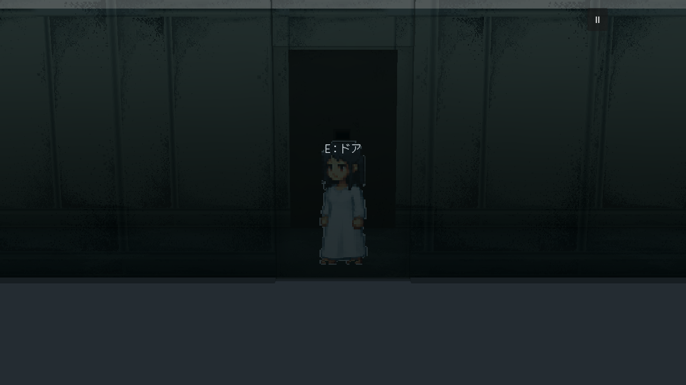


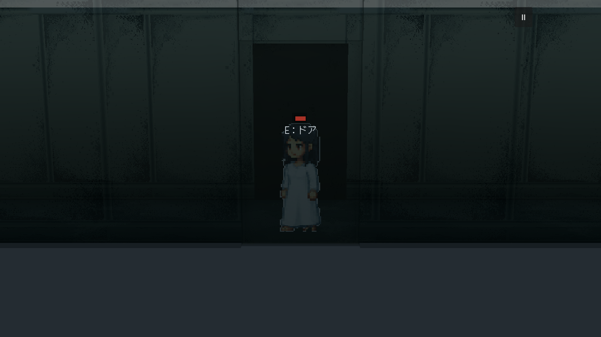

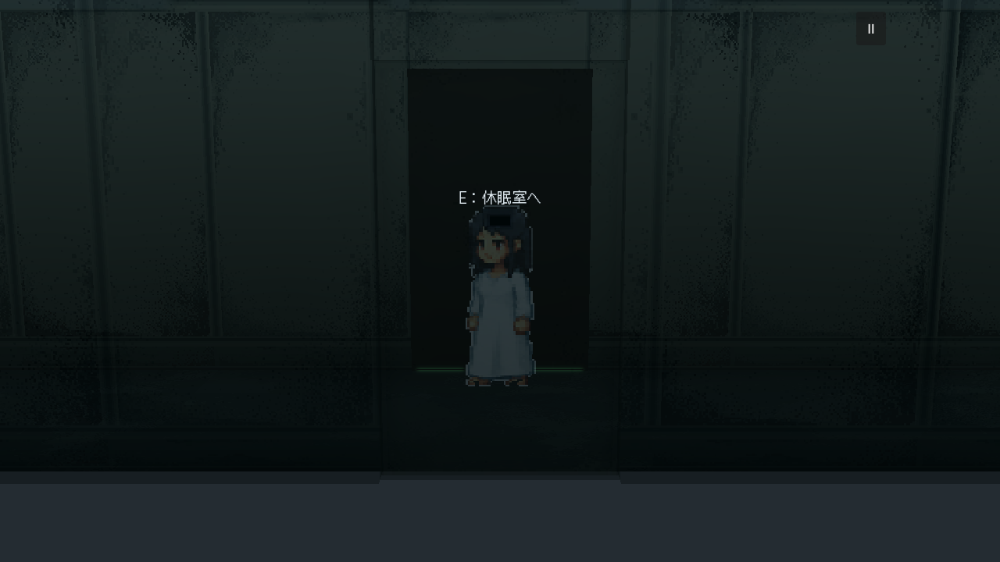

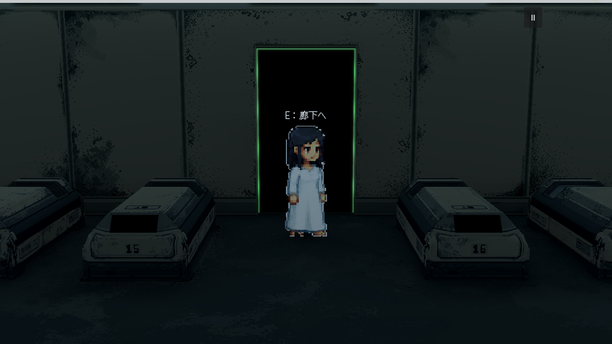
运行入口不变：scenes/dev/cryo_4f_complete_v3.tscn，停止后重新F6。门、门楣和墙板共用同一墙中心平面判定，不再因人物横移让门单独恢复实体。提示与E共用最近门目标：走向对门只认证对门，主门开着也不会抢走交互。
保持42%不透明度、原像素材质、双面半透明；门后的灰色环境及Room1的黑色门洞继续保留。因此仍可能透过前景看到后方主门的黑色形状，它不是前景门单独恢复实体。源与验证 · 完整功能回归 · 逐图alpha及交互目标
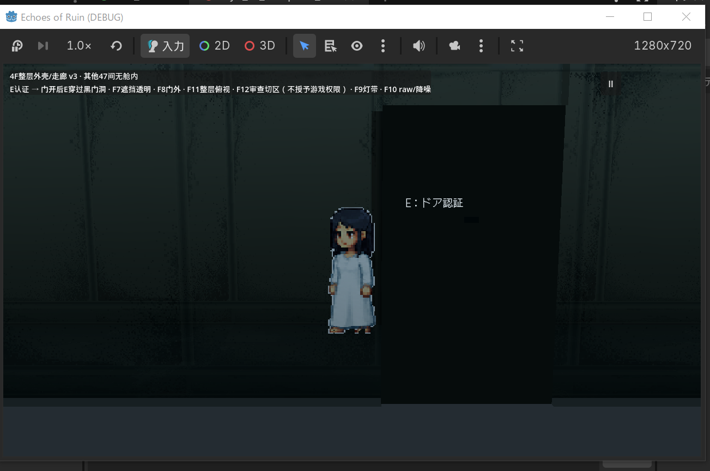
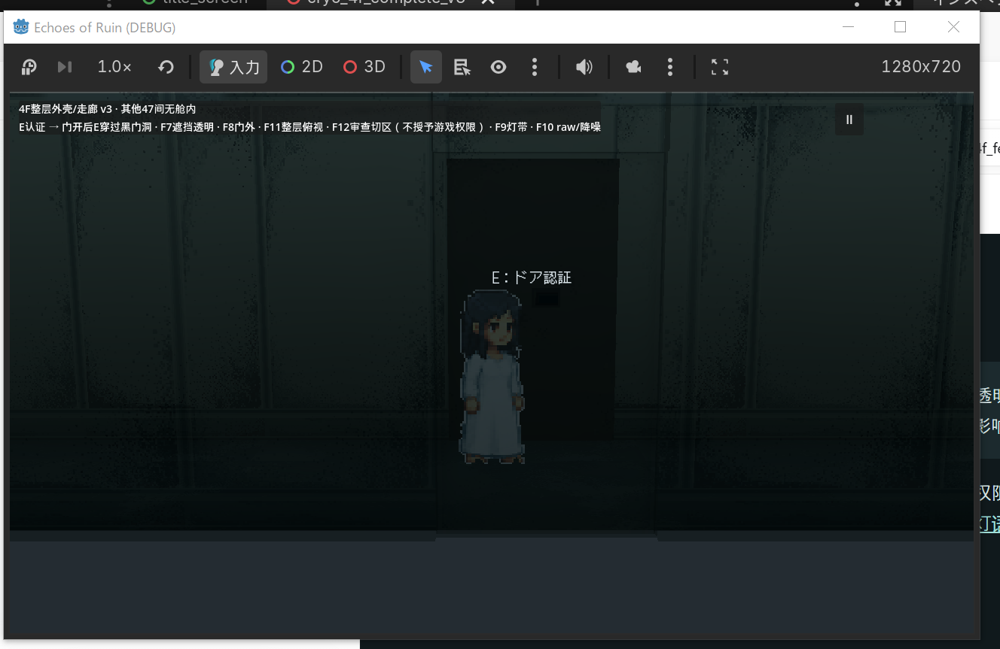
六个横向位置的门板、门体、门楣及两侧墙均为0.42；以下四个位置另有实机截图。门后Room1门板／黑幕属于后景，保留其原状态。
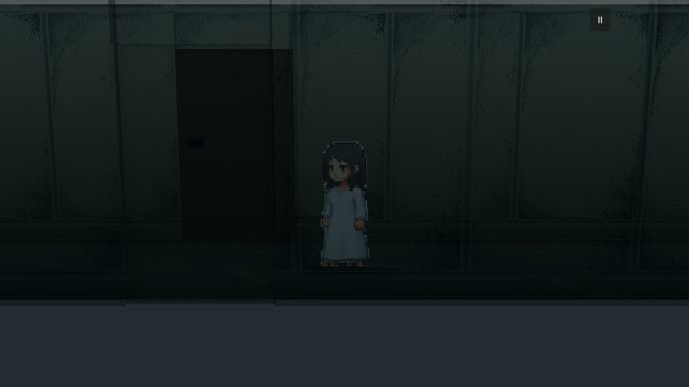
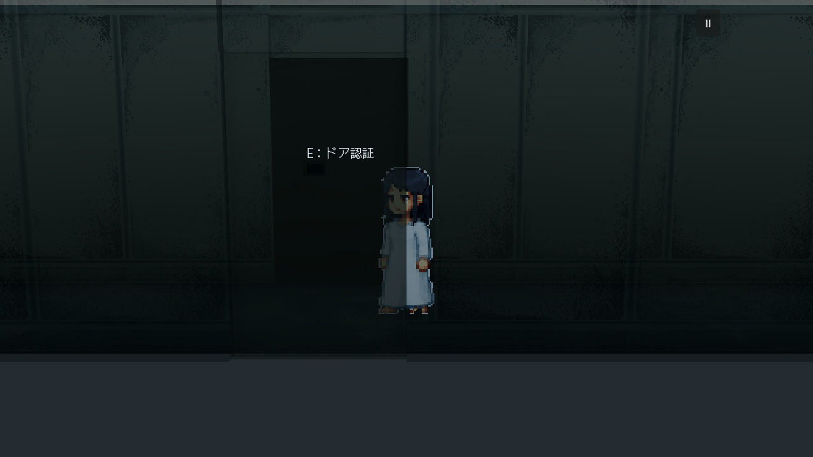
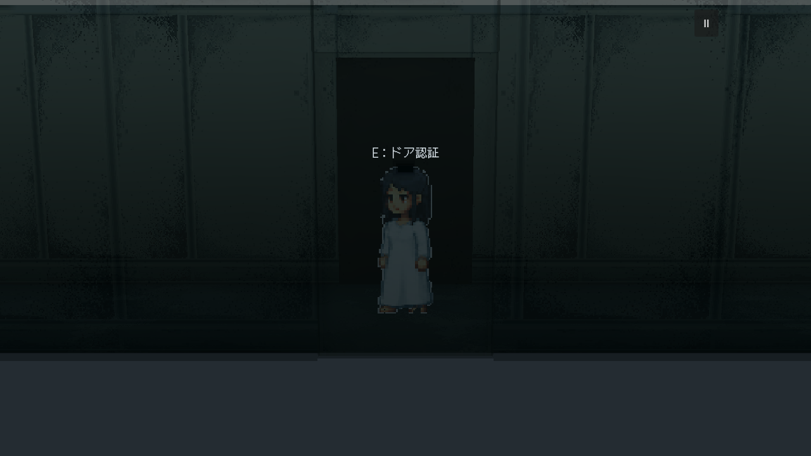
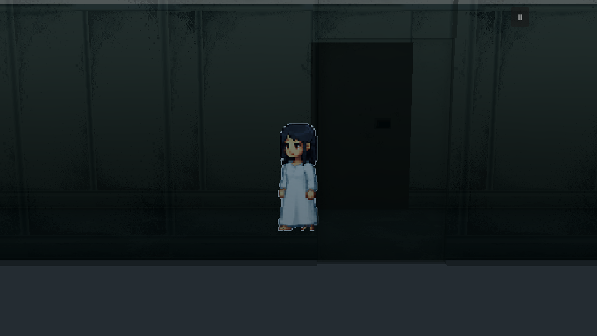
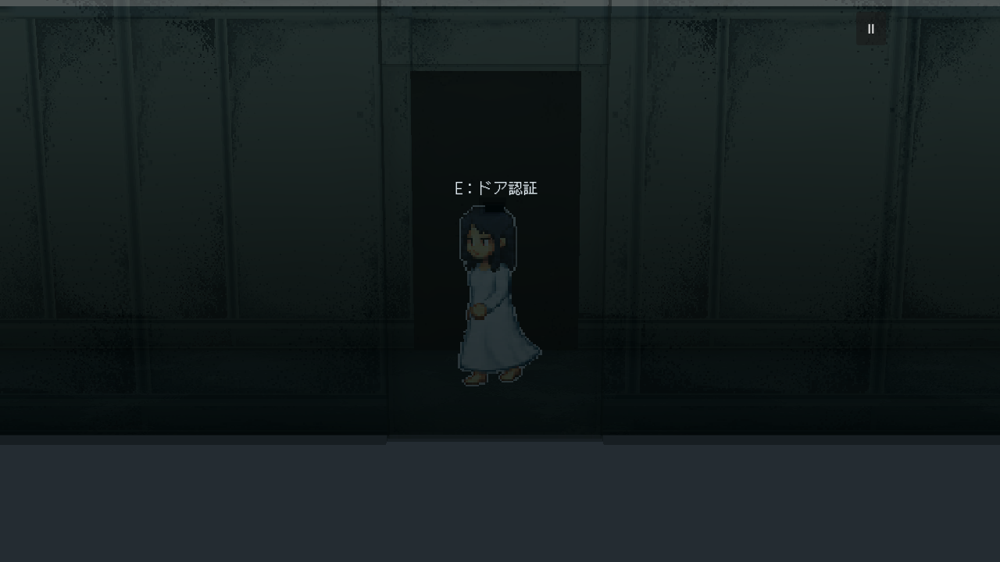




修后原图1280×720。静态几何、UV、像素颜色和光图均未改；原整层楼梯／室内灰盒边界保持，新增生成0次。